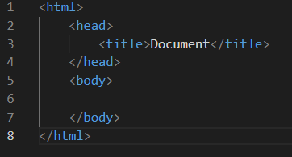
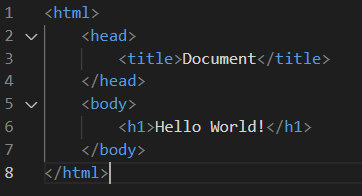
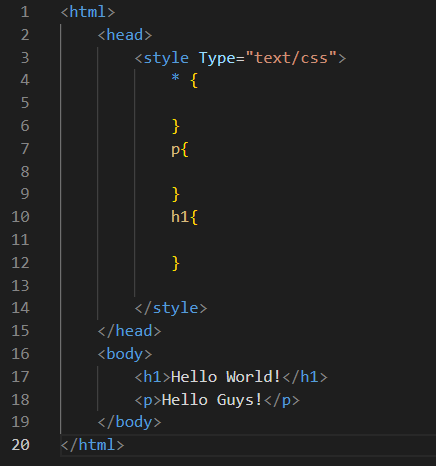
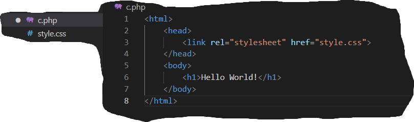
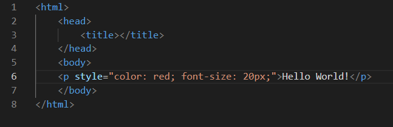
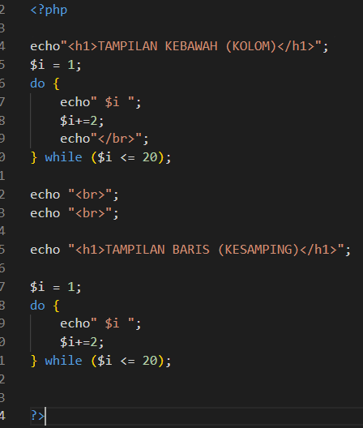

CSSlangsung dituliskan didalam head dengan memberikan MIME Type (text/css).
- Contoh Embedded/Internal Styel Sheet
CSSdibuat diluar fileHTML/PHPmenggunakan (External Link).
- Contoh External Style Sheet
CSSdibuat dalam satu baris didalam elementHTML.
- Contoh Inline Styele Sheet
Codingannya
 HASIL PERULANGANNYA